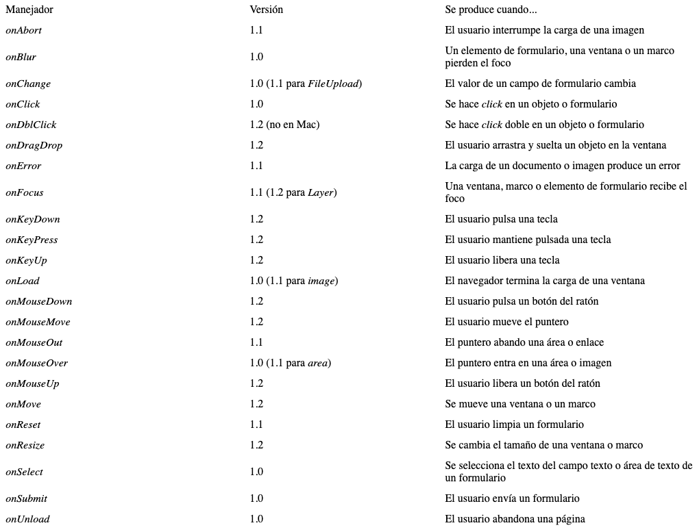
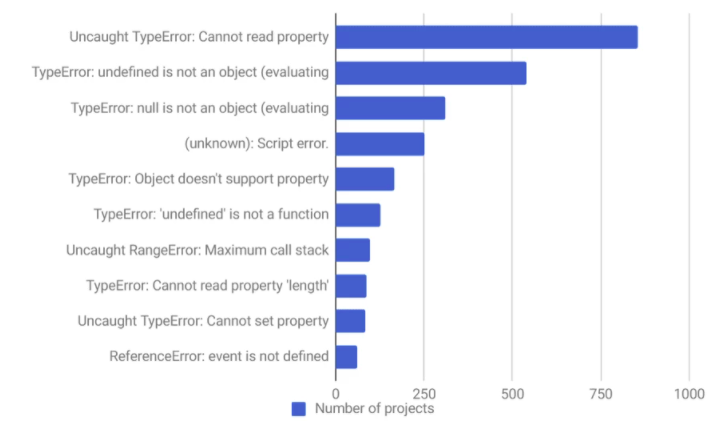

1. ¿Qué es JavaScript?
R: Es un lenguaje de 'scripting' para paginas web, está basada en prototipos, multiparadigma, de un solo hilo, dinámico, con soporte para programación orientada a objetos, imperativa y declarativa.
2. ¿Qué hace JavaScript?
R: Puede almacenar valores útiles dentro de variables, operaciones sobre fragmentos de texto (conocidas como "cadenas" y ejecuta código en respuesta a ciertos eventos que ocurren en una página web.
3. ¿Qué es el DOM?
R: Modelo de Objetos del Documento, es una API definida para representar e interactuar con cualquier documento HTML o XML. El DOM es un modelo de documento que se carga en el navegador web y que representa el documento como un árbol de nodos, en donde cada nodo representa una parte del documento (puede tratarse de un elemento, una cadena de texto o un comentario).
4. ¿Qué es un APIs Web?
R: Interfaz de Programación de Aplicaciones, es usualmente un conjunto de métodos, propiedades y eventos para con el fin lograr ciertas tareas.
5. Mencionan como minimo 5 ejemplos de Apis Web
R: Instagram, Github, Google Translate, Pinterest y Paypal.
6. ¿Qué es lo que JavaScript hace en tu página web?
R: Lo que hace JavaScript es modificar dinámicamente HTML y CSS para actualizar una interfaz de usuario, a través de la API del modelo de objetos del documento (como se mencionó anteriormente).
7. Menciona un ejemplo de cómo añadir JavaScript a tu página web
R: JavaScript interno: 1. En primer lugar, haz una copia local de nuestro archivo de ejemplo apply-javascript.html. Guárdalo en un directorio en algún lugar accesible. 2. Abre el archivo en tu navegador web y en tu editor de texto. Verás que el HTML crea una página web simple que contiene un botón en el que se puede hacer clic. 3. A continuación, ve a tu editor de texto y agrega lo siguiente en tu head, justo antes de tu etiqueta de cierre. 4. Ahora agregaremos algo de JavaScript dentro de nuestro elemento script para que la página haga algo más interesante — agrega el siguiente código justo debajo de la línea "// El código JavaScript va aquí". 5. Guarda tu archivo y actualiza el navegador — ahora deberías ver que cuando haces clic en el botón, se genera un nuevo párrafo y se coloca debajo.
8. ¿Cuáles son las dos maneras de añadir código JavaScript a tu sitio web?
R: De manera interna o externa
9. ¿Cómo se comenta el código en JavaScript?
R: Un comentario de una sola línea se escribe después de una doble barra inclinada (//), se escribe un comentario de varias líneas entre las cadenas /* y */
10. ¿Cómo se declara una variable y cuáles son sus principales características?
R: Creas una variable con la palabra clave let (o var) seguida de un nombre para tu variable
11. ¿Cómo se declara una condición y cuáles son sus principales características?
R: La forma más simple de bloque condicional comienza con la palabra clave if, luego algunos paréntesis, luego unas llaves. Dentro del paréntesis incluimos una prueba. Si la prueba devuelve true, ejecutamos el código dentro de las llaves. Si no, no lo hacemos y pasamos al siguiente segmento del código.
12. ¿Cómo se declara bucle y cuáles son sus principales características?
R: Estos te permiten seguir ejecutando un fragmento de código una y otra vez, hasta que se cumpla una determinada condición. Se conforman de 3 argumentos: valor inicial, condición de salida e incremento.
13. ¿Cómo se declara una función y cuáles son sus principales características?
R: Permiten almacenar un fragmento de código que hace una sola tarea dentro de un bloque definido, y luego llamar a ese código cuando lo necesite usando un solo comando corto. Usando la palabra clave function, seguida de un nombre, con paréntesis después de él. Después de eso ponemos dos llaves ({ }).
14. ¿Cómo se declara un objeto y cuáles son sus principales características?
R: Declarar una nueva variable de tipo Object y asignarle las propiedades o métodos que el objeto necesite. var obj = new Object();
15. ¿Cómo se puede leer un evento con JavaScript?
R: Las construcciones que escuchan el evento que ocurre se denominan escuchas de eventos, y los bloques de código que se ejecutan en respuesta a la activación del evento se denominan controladores de eventos. guessSubmit.addEventListener('click', checkGuess);
16. ¿Qué eventos podemos leer con JavaScript menciónales y descríbalos?
R:

17. Mencionan un ejemplo donde JavaScript sea ejecutado del lado del cliente
R: Visual Basic, un popular lenguaje para crear aplicaciones Windows.
18. Mencionan un ejemplo donde JavaScript sea ejecutado del lado del servidor
R: PHP es el acrónimo de Hipertext Preprocesor. Es un lenguaje de programación del lado del servidor gratuito e independiente de plataforma, rápido, con una gran librería de funciones y mucha documentación.
19. ¿Qué tipo de errores podemos encontrar en JavaScript?
R:

20. ¿De qué manera podemos ver los errores de JavaScript en el navegador?
R: Abriendo la consola del navegador en el que nos encontremos.
21. ¿Cómo puedo convertir Strings a Objetos?
R: Las comillas dobles alrededor del nombre de la propiedad son opcionales, si el nombre es un nombre legal de JavaScript, y no es una palabra reservada.
22. ¿Cómo se usan los arreglos en JavaScript?
R: Las matrices se describen como "objetos tipo lista"; básicamente son objetos individuales que contienen múltiples valores almacenados en una lista. let shopping = ['bread', 'milk', 'cheese', 'hummus', 'noodles'];
shopping;
23. ¿Cuántas versiones de JavaScript han existido menciona sus principales características?
R: JavaScript 1.0: Nació junto a Netscape 2. Cuando se lanzó este navegador, los creadores de Netscape crearon también este lenguaje, soportando una gran cantidad de instrucciones y funciones.
JavaScript 1.1: Apareció junto a la versión 3 de Netscape y del Internet Explorer 3 incorporando unas pocas funciones más que su versión anterior, entre ellas el tratamiento de imágenes de forma dinámica y la posibilidad de creación de matrices (arrays).
JavaScript 1.2: Se lanzó junto con la aparición de las versiones 4.0 de los navegadores más populares de ese momento: Netscape e Internet Explorer. El principal problema con esta versión fue la distinta implementación que le dieron ambas empresas Netscape y Microsoft producto de la constante lucha que mantuvieron por la obtención de la mayor parte del mercado.
JavaScript 1.3: Versión que fue lanzada con la aparición de las versiones 5.0 de ambos navegadores. Con esta versión se lograron ciertos avances en busca de la estandarización; sin embargo, siempre hay detalles que considerar a la hora de la implementación.
JavaScript 1.5: Es una versión completamente compatible con el estándar ECMA-262, Edition 3.
JavaScript 1.6, 1.7 y 1.8: Al parecer, a partir de la versión 1.6 prácticamente solo el navegador Firefox implementa soporte completo de todas sus características.
24. ¿Cuántas versiones de ECMAScript han existido menciona sus principales características?
R: 1995. Primeras versiones de JavaScript, todavía con nombres provisionales como Mocha, LiveScript.
1997. Definición del primer estándar JavaScript a cargo de Ecma International que fue denominado ECMA-262 first edition también denominado JavaScript 1.2.
1998. Aparición del segundo estándar JavaScript denominado ECMA-262 second edition también denominado JavaScript 1.3.
2000. Aparición de la especificación del estándar JavaScript denominado ECMA-262 third edition también denominado JavaScript 1.5.
2010. Aparición de la especificación del estándar JavaScript denominado ECMA-262 fifth edition también denominado JavaScript 1.8.5.
2019. Fecha prevista para ECMA-262 sixth edition.
25. ¿Qué es Firefox Developer Edition?
R: Firefox Developer Edition es una version de Firefox preparada para desarrolladores, con todas las herramientas necesarias para empezar a trabajar.
26. ¿Cuáles son las principales funciones y características de Firefox Developer Edition?
R: DevTools Challenger, Herramientas de edición visual, Herramientas de rendimiento, Inspector de páginas, Editor web Audio, Consola Web, Depurador de Javascript, Monitor de red, Editor de estilos, Vista diseño responsive y Valence
27. ¿Qué es WebGL?
R: WebGL trae gráficos en 3D para la Web mediante la introducción de una API que cumple estrictamente la OpenGL ES 2.0 que se puede utilizar en elementos canvas HTML5.
28. ¿Qué APIs existen para APIs for game development?
R: Existen infinidad de API, tantas como programas, aunque algunas de las que más te sonarán son Direct3D, OpenGL y Vulkan que están relacionadas con los gráficos de los videojuegos.
29. ¿Qué es un webSocket?
R: WebSocket es un protocolo de red basado en TCP que establece cómo deben intercambiarse datos entre redes. ... La ventaja de este intercambio es que se accede de forma más rápida a los datos. En concreto, WebSocket permite así una comunicación directa entre una aplicación web y un servidor WebSocket.
30. ¿Cómo gestiona la memora JavaScript?
R: JavaScript se reserva memoria cuando"cosas" (objetos, strings, etc.) son creados y "automáticamente" liberados cuando ya no son utilizados. El proceso anterior es conocido como Recolección de basura (garbage collection). Su forma "automática" es fuente de confusión, y da la impresión a los desarrolladores de JavaScript (y de otros lenguajes de alto nivel) de poder ignorar el proceso de gestión de memoria. Esto es erróneo.
1
2
3
4
5
6
7
8
9
10
11
12